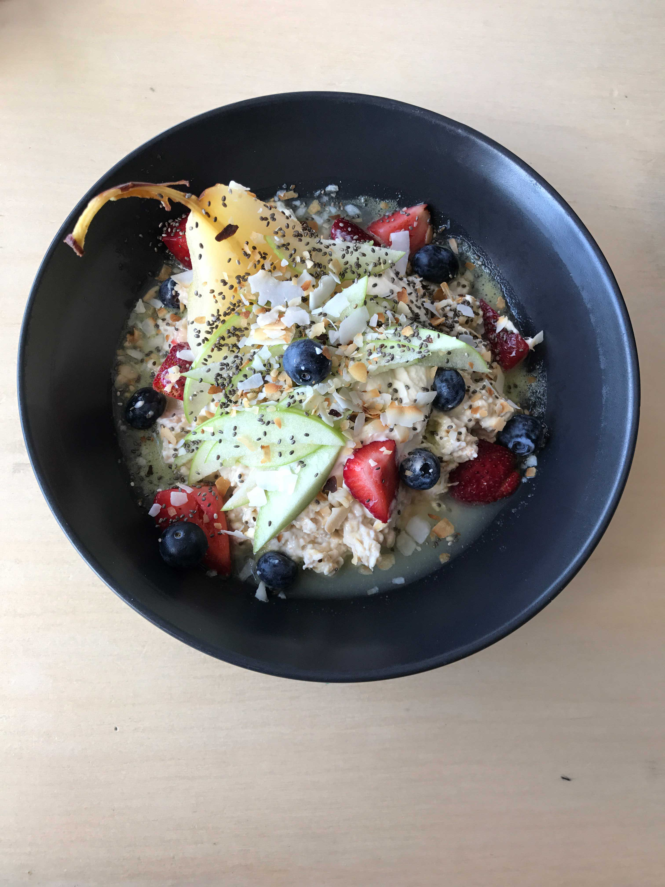

This topic was sprung on by a conversation I had with my Mom last night (Thanks for the inspiration Mamma.) Its the difference between healthy eating vs. disordered eating. Now this may seem obvious to some people like, “well duh of course it’s different?” But for family, friends, and peers of people recovered/recovering from an eating disorder the lines can sometimes get a little fuzzy.
What I mean by this is that for someone who’s suffered from an eating disorder, your eating is constantly under a microscope. People are constantly watching and monitoring what your eating whether you like it or not people will always be hyper aware of what you eat since you were that person with an eating disorder once upon a time.
It gets super annoying at times. Although yes, I did suffer from an eating disorder, that does not mean I need to eat every single thing offered to me. The looks I get when I pass on dessert are the worst. It’s like people think “oh there she goes restricting again” when in reality I’m just full from dinner! I’m at a point in my recovery where I can comfortably decline food when I’m genuinely not hungry or just don’t feel like eating what’s offered.
Think about it, as a human it’s normal to not constantly want EVERY food that is offered to you, so why should it be any different for people who have suffered previously?
Now I’m not saying this applies to people in active recovery because at that point your hunger signals can still be skewed so it’s hard to trust them.
But personally my hunger cues have come back, I eat when I’m hungry and I stop when I’m full, something that took me a long time to practice
Something that goes along with this is wanting to eat healthy as someone who’s had a past with an eating disorder. Every time I opt for a salad instead of pasta people raise their red flags. But again, I’m at the point in recovery where I’m confident that choosing what I eat is based off what I want.
I went through a stage in recovery where I had to eat everything, all the sweets, all the foods I had been scared of for ages. And as good as this was to show me that a single food doesn’t make you fat. I no longer fear these foods but that doesn’t mean I want to eat them all the time.
I’m a firm believer in putting nutritious whole foods into your body. Fuelling your body with good foods that make you feel good. Since I started recovery my mentality has drastically changed from eating to look good to eating to feel good.

I find eating whole natural foods like this makes me feel my best.
I do enjoy the occasional treat that I no longer feel bad about eating. But I also do not want to eat them as often as I was in recovery and I don’t think I should feel bad about that. It took me a while to learn that concept, because I felt like if I wasn’t eating sweets and treats I was “restricting” when in reality I just truely did not want those foods anymore.
I make my food choices based from a good place, not a disordered place. I’m happy and healthy enough to now know that difference. And it’s important for friends and family to understand that. Just because I don’t want to eat processed sugary treats all the time doesn’t mean I’m sliding into the oblivion of anorexia it just means maybe I genuinely value my health.
I put my body through the ringer with my eating disorder, now it needs some love. And feeding it whole unprocessed foods is my personal preference to feel good.
Of course with the occasional donut… Because everyone knows how much I love my donuts.
Moral of my rant is that people who have suffered with eating disorders can eventually learn to make dietary decisions for themselves based on other values than their disorder. It’s okay to want to eat healthier than you did while in active recovery, just make sure you are doing it for the RIGHT reasons. If there is any hint that your choices may be coming from a disordered place than take a step back, because that’s not what healthy eating is.
Slips In Recovery
As someone who lives with mental illness’ not everyday is a great day. I do my best to cope day to day and use my strategies to battle my thoughts but it doesn’t always work out that way.
Some days admittedly my mental illness’ get the best of me, and that’s okay. Recovering from something like an eating disorder is not black and white, there are many grey areas. Recovery is not linear, there are so many ups and downs but that doesn’t mean you should give up when things get rough. Coming out on top after a bad day or bad moment just shows how strong and committed you are to working at getting better.
Slips in recovery will happen, so don’t feel like just because you had a bump in the road it’s all over and that you might as well throw in the towel. There’s no denying having a slip in recovery sucks, and is extremely disheartening but it’s knowing how to come back from a slip that will set you apart.
It’s important in recovery to ditch the “all or nothing” mentality, because that will only hurt your progress. Diving head first into recovery expecting all your symptoms and struggles to just disappear right then and there is just setting yourself up for failure. I’m not saying you should expect to have a slip up but just prepare yourself with the skills and the strategies to deal with one. So god forbid it does happen you don’t get into the mind set that all your recovery progress is now ruined.
Now to back pedal a bit for those not familiar with eating disorders a “slip” in recovery would be when you engage in a symptom of your eating disorder for example restricting, binging, purging, ect.
One of the saddest things I ever experienced in my journey with recovery from my eating disorder happened when I was in treatment. A person had newly joined the program (since intake happened weekly) and things were going okay for them. Until one day they had a slip and I never saw them again. This made my heart so sad, because slips happen to all of us. But it’s coming back after a moment of weakness that true progress is made. To this day I wish they would have come back the next day and let us support them and receive the help they needed and deserved. I don’t know where they are today but I hope they’re doing well.
Forgiveness and acceptance are two crucial things to practice while in recovery, especially when dealing with slips. Learning to accept, forgive, and move on after you engage in a symptom is so important. Using it as an experience to learn from to help prevent future slips is a beneficial tool. But once you’ve analysed your slip and determined why it happened and how to prevent it next time, you need to forgive yourself and let it go.
Dwelling and letting yourself ruminate over the incident will only hinder your progress moving forward. You need to be able to accept your mistakes and learn from them, not let your illness use them as fuel for reasons you should give up or continue with bad patterns. If you are in/or have been in recovery then you know these voices all too well. The ones in your head that tell you things like, “well you’ve already restricted at breakfast and ruined a good day so you might as well keep going…” When in reality you need to combat these thoughts with things such as, “yes I restricted at breakfast, but it’s lunch now, it’s a new meal, and I can’t change the past but the day isn’t over, I can do my best right now to get all my food in.” Accepting the slip, and moving on from it positively.
This post was a little of me rambling but it’s a topic I felt like discussing because it’s something that’s true to my own situation. Im guilty of having a very negative mentality after slipping up and have had to work very hard at staying on track after a slip. At the end of the day I have been successful thus far at continuing to always chose recovery but it is not always easy. Especially when old habits start to surface, learning to get back on track before a slip becomes a slide is imperative.
In conclusion, I think working with a slip rather than against it will help you bounce back from it. It’s important to forgive yourself, accept your temporary lapse in recovery, and actively chose to get back up and keep fighting. Don’t hide your slips or feel ashamed, they happen to all of us at some point in time, and reaching out for support will only benefit you.
Something I heard once that I’ve always held dear to me in recovery that I like to tell my self is, “Bad days build better days.” And boy is that ever true.
Mamma With Mental Illness’
Here’s a hot topic for y’all, mental illness! Just a disclaimer, I get pretty detailed in regards to my illness’ so if you are someone easily triggered please be aware!
I plan on dedicating one post per week to my journey with my mental health, my past experiences, and more in depth posts to some of the topics I touched on below. So if mental health/illness is something of your interest or something you wish to learn more about stay tuned!
There’s something strangely taboo about being a Mom and speaking out about your struggles with mental illness but in reality us Moms aren’t always super heros. Some of us (a lot more than people think) battle with mental illness. And I’m here to share my story, in hopes to encourage people out there to seek help or just to make someone feel like “hey it’s not just me.”
Those close to me know my past, I’ve breifly mentioned it on social media but never really fully opened up about it, so here we go.
My grade 12 year is where it all began. Although I’ve always been hyper aware of my body image and the way I looked for as long as I can recall, it never really negatively impacted me until then. There was so much going on in my life which is a whole other post, but in the midst of all these things I decided to start a very restrictive diet. As the pounds fell off and people started to notice I felt so good about myself, I was more confident than ever before, I loved the way clothes fit, and was getting more attention from guys than I had ever received. Things were good for a bit, but eventually it wasn’t good enough I wanted more.
I started stepping on the scale once a day instead of once a week, I started skipping meals, and cutting more foods out of my diet completely. And just as I wished, the number dropped. But it still wasn’t good enough and I still wanted more.
So I started stepping on the scale multiple times a day, I started skipping entire days of eating, I started hiding food and lying to my family about what I was eating, and started to spend hours in the gym burning whatever little calories had gotten into my system. At this point I was full on obsessed.
Before I knew it I was three hours away from home living on my own at university which made my anorexia easier to conceal to people at home. My illness began to truly consumed my entire life, because of the anorexia I developed OCD, anxiety, and depression as symptoms to the underlying issue- my eating disorder.
For the next almost two years I would bring my own weighed and pre calculated food every where I went. I wouldn’t eat at social gatherings. Not one bite of food or sip of a drink went into my mouth without knowing it’s caloric value. My one and only daily priority was getting a two hour (sometimes longer) workout in. And if my size 00 jeans felt even the slightest bit tighter than the day before I punished myself by refusing to eat that day.
I could talk for hours about how consumed I was and all of the awful things I did while wrapped up in my disorder but I’d like to move on, to when I realised it was time to get help.
I vividly remember, I was in my second year of university living off campus in a house. The day I decided to reach out for help I had just gone through a terrible couple of days of binge eating (the result of starving the days prior) and was on the bus to the gym, I was on the phone with my mom on verge of crying asking what was wrong with me? I told her that I really needed help, and that I can’t go on living like this. I completely broke down on that bus ride and begged her for help. She agreed, she was so relieved I had finally reached a point where I was ready to accept help. In the following two months I switched to online university, moved home, and was admitted to the out patient eating disorder program at Toronto General Hospital (I will do an entire post dedicated to my experience in this program later.)
Essentially this program saved my life. Once I graduated from the program I was on my own, which I’m not going to lie it was (and still is) tough. But I’ve been out of treatment for almost two years and although I have had many slip ups and am not perfect I’m doing much better than I was two years ago when I entered the program. Anyone who has/had an eating disorder can tell you although there is such thing as recovery, an eating disorder is something you will always somewhat struggle with.
And that leads me to today. Yes I’m a Mom, but I’m also someone who’s a recovering anorexic who on top of that still battles anxiety and OCD. Becoming a Mom didn’t make all my mental battles with myself suddenly melt away like society sometimes seems to think. It’s been tough to battle my eating disorder thoughts being post partum and unhappy with my body, and it’s tough for my OCD and anxiety adjusting to my new role as a Mom. But I now know strategies to cope with my symptoms and help me to get through bad days whenever they arise.
Being a Mom with mental illness’ makes me motivated to raise my daughter with even more confidence and strength. My goal is to set a good example emotionally, mentally, and physically. Committing to living a healthy lifestyle is just as much for me as it is for her. On my bad days she is a constant reminder of why I keep pushing myself.
I’m no where near fully recovered or free from my mental illness’ but thanks to lots of help I’ve learned how to better cope with them, and although they are a part of me and something I have to deal with they no longer define who I am and that’s a hell of a lot more than I could say years ago.
If there is one thing you take from this, let it be that it’s okay not to be okay, and you are worthy of getting help no matter who you are, mental illness does not discriminate.
Healthy Starbucks Options
Everyone likes coffee, and if you don’t you clearly haven’t been a university student or a parent yet.
Yes it’s cheaper and easier to make coffee at home but as a stay at home Mom I use my daily coffee as an excuse to get out of the house! Bubs and I pack the stroller up and walk our way to Starbucks as a nice outing!
As someone who’s trying to watch the calories and eat healthy Starbucks can be a daunting place! A lot of the drinks are packed full of sugar, fat, and calories. But don’t fret I’m here to tell you some easy tips and my favourite options that are both delicious and calorie friendly!
Before I list my favourites I thought I’d give some basic tips;
Forgo the sugar, bring your own sweetener! I like to use liquid stevia which you can find in most grocery stores.
Cut the dairy, Starbucks drinks automatically come made with 2% milk, substitute this for either almond or coconut milk to cut out fat and lower the calories!
No classic, in some drinks (mostly the iced variety) they add a sugar syrup they call “classic” it’s basically just to sweeten the drinks! I always ask for no classic to save the calories, then add my own sweetener!
Sugar free please! Starbucks is awesome because most of their syrups come also as sugar free! Just ask to substitute when you order.
No whip, if you do feel like indulging a bit by getting a frap (cause sometimes we all need a little frap in our lives) just ex on the whip cream! This saves a bit of calories while still enjoying the frappucino!
Most of the baristas I’ve encountered have been nothing but awesome with all my questions and substitutions so don’t feel like it’s a bother! I tend to tip them as well to thank them for being patient… With that being said here are my 3 go-to orders!
My Go To Iced Coffee:
Venti Iced Coffee made with Almond milk, No classic syrup, 2 pumps sugar-free vanilla
Once I get my coffee I add my own liquid stevia (0cals)
The only calories from this drink are from the almond milk which if you punch in online come to 60cals!
My Go To Warm Drink:
Grande Cappuccino made with Almond Milk
I also add my own liquid stevia to this one (can you tell I like sweet things)
This drink is 100 calories and perfect for a chilly day
When I’m not feeling coffee:
Grande Unsweetened Green Tea Lemonade
Super yummy and refreshing, this drink rings in at 45 calories!
Don’t forget, it’s totally okay to indulge in a high calorie, delicious sugary drink every so often, it’s all about balance! But if like me Starbucks is a regular occurrence you may want to opt for healthier choices!
I hope this helped, I’d love to hear some of the drinks you guys enjoy in the comments below! I’m always looking for new drinks!
Banana & Chocolate Overnight Oats
If you’re like me the idea of cold oatmeal may seem a little off putting. It took me a while to actually hop on the overnight oats trend but BOY AM I GLAD I DID.
I am not kidding when I say this is probably the easiest healthy breakfast I’ve tried. Being a new mom of a 5 month old means meals need to be quick and easy. I am a big believer in healthy eating so trying to find super easy and quick, yet healthy and delicious recipes has been my new challenge! But seriously even if your not a Mom give this a try, it’s so delicious and customisable to any pallet.
Ok enough babbling, heres how I make my overnight oats:
Mason jar is optional, sometimes I just chuck them in a large coffee mug and they turn out just the same!
Banana Chocolate Overnight Oats
Vegan • Gluten Free • Serving size (1)
You will need;
1/2 Banana
1/2 cup rolled oats
1/2 Cashew milk (or any milk of your choice)
1 tsp pure maple syrup
1/8 tsp cinnamon
1/2 tsp cocoa powder (or cacao powder)
1/4 tsp pure vanilla extract
1 tsp chia seeds
Directions:
In a small mason jar (or large coffee mug) mix together all of the dry ingredients, Oats, cinnamon, cocoa, and chia seeds. Mix together
Stir in the wet ingredients, Cashew milk, maple syrup, and vanilla.
Add in sliced banana and combine.
Screw on lid (or cover with plastic wrap) and set in fridge over night.
In the morning stir the oats to combine all the ingredients that have set. If you’re like me and have a massive sweet tooth you may want to add some more maple syrup or liquid stevia!
If the oats aren’t the consistency you want try adding a bit more milk and stir until they are the way you like them!